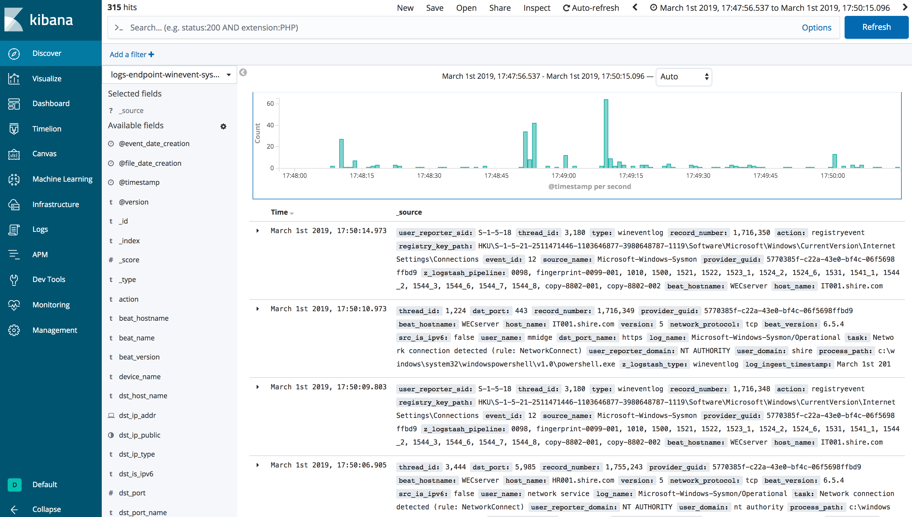
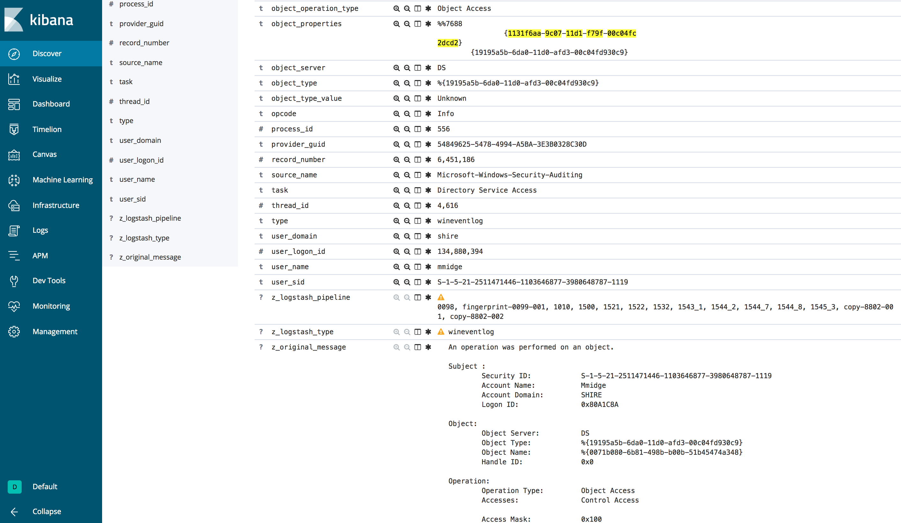

Consume Mordor Datasets¶
You can simply download the json files available in this repo and start using some grep fu! if you feel like it. However, there are other more efficient ways you can consume the pre-recorded data and even simulate a real data pipeline to ingest the data to your own SIEM or data lake.
Kafkacat Style¶
You can start using a tool named Kafkacat to act as a Kafka producer and send data to Kafka brokers. In producer mode, Kafkacat reads messages from standard input (stdin) or a file. This means that you can send data back to any other Kafka broker that you are using as part of your pipeline. You can just grab the logs from this repo and re-play them as if they were being ingested in real-time.
Requirements¶
Kafka Broker : A distributed publish-subscribe messaging system that is designed to be fast, scalable, fault-tolerant, and durable (Installed by HELK).
Kafkacat : A generic non-JVM producer and consumer for Apache Kafka >=0.8, think of it as a netcat for Kafka.
HELK (Basic Option): An elastic ELK (Elasticsearch, Logstash, Kibana) stack.
Docker CE : Docker Community Edition (CE) is ideal for developers and small teams looking to get started with Docker and experimenting with container-based apps (Installed by HELK).
Docker Compose : a tool for defining and running multi-container Docker applications (Installed by HELK).

Consume Logs¶
Install Kafkacat following the instructions from the official Kafkacat repo
If you are using a debian-based system, make sure you install the latest Kafkacat deb package.
I recommend at least Ubuntu 18.04. You can check its Kafkacat deb package version and compare it with the latest one in the Kafkacat GitHub repo.
If you are using Ubuntu 19, you might need to run the following commands (Thank you Jason Yee)
wget http://archive.ubuntu.com/ubuntu/pool/main/o/openssl1.0/libssl1.0.0_1.0.2n-1ubuntu6_amd64.debsudo dpkg -i libssl1.0.0_1.0.2n-1ubuntu6_amd64.deb
You can also install it from source following the Quick Build instructions.
Download and run the HELK. Make sure you have enough memory to run the basic build. You can run it with 5-6GB of RAM now (More information here).
$ git clone https://github.com/Cyb3rWard0g/HELK.git
$ cd HELK/docker
$ sudo ./helk_install
Use the defaults (Option 1 and Basic license)
**********************************************
** HELK - THE HUNTING ELK **
** **
** Author: Roberto Rodriguez (@Cyb3rWard0g) **
** HELK build version: v0.1.7-alpha02262019 **
** HELK ELK version: 6.6.1 **
** License: GPL-3.0 **
**********************************************
[HELK-INSTALLATION-INFO] HELK being hosted on a Linux box
[HELK-INSTALLATION-INFO] Available Memory: 12541 MBs
[HELK-INSTALLATION-INFO] You're using ubuntu version xenial
*****************************************************
* HELK - Docker Compose Build Choices *
*****************************************************
1. KAFKA + KSQL + ELK + NGNIX + ELASTALERT
2. KAFKA + KSQL + ELK + NGNIX + ELASTALERT + SPARK + JUPYTER
Enter build choice [ 1 - 2]: 1
[HELK-INSTALLATION-INFO] HELK build set to 1
[HELK-INSTALLATION-INFO] Set HELK elastic subscription (basic or trial): basic
[HELK-INSTALLATION-INFO] Set HELK IP. Default value is your current IP: 192.168.64.138
[HELK-INSTALLATION-INFO] Set HELK Kibana UI Password: hunting
[HELK-INSTALLATION-INFO] Verify HELK Kibana UI Password: hunting
[HELK-INSTALLATION-INFO] Installing htpasswd..
[HELK-INSTALLATION-INFO] Installing docker via convenience script..
[HELK-INSTALLATION-INFO] Installing docker-compose..
[HELK-INSTALLATION-INFO] Checking local vm.max_map_count variable and setting it to 4120294
[HELK-INSTALLATION-INFO] Building & running HELK from helk-kibana-analysis-basic.yml file..
Download the mordor repo and choose your technique:
$ cd ../../
$ git clone https://github.com/Cyb3rWard0g/mordor.git
$ cd mordor/small_datasets/windows/credential_access/credential_dumping_T1003/credentials_from_ad/
Decompress the specific mordor log file
$ tar -xzvf empire_dcsync.tar.gz
x empire_dcsync_2019-03-01174830.json
Send the data to HELK via Kafcakat with the following flags:
-b: Kafka Broker
-t: Topic in the Kafka Broker to send the data to
-P: Producer mode
-l: Send messages from a file separated by delimiter, as with stdin. (only one file allowed)
$ kafkacat -b <HELK IP>:9092 -t winlogbeat -P -l empire_dcsync_2019-03-01174830.json
Browse to your Kibana Discover view and start going through the data

You could look for potential DCSync actvity from a non-Domain-Controller account with the following query in Kibana:
event_id:4662 NOT user_name:*$ AND object_properties:("*1131f6aa-9c07-11d1-f79f-00c04fc2dcd2*" OR "*1131f6ad-9c07-11d1-f79f-00c04fc2dcd2*" OR "*89e95b76-444d-4c62-991a-0facbeda640c*")

Jupyter Notebook Style¶
You can consume mordor data directly with a Jupyter notebook and analyze it via python libraries such as Pandas or PySpark.
Suricata Style¶
Install Suricata (OSX)
https://redmine.openinfosecfoundation.org/projects/suricata/wiki/Mac_OS_X_10_11
Download open Emerging Threat rules
wget https://rules.emergingthreats.net/open/suricata/emerging.rules.zip
tar zxvf emerging.rules.tar.gz
sudo mkdir /var/lib/suricata/
sudo mv rules /var/lib/suricata/
Update Suricata config to point to that folder
/etc/suricata/suricata.yaml
default-rule-path: /var/lib/suricata/rules
rule-files:
- emerging*
Clone Project and change directories
git clone https://github.com/hunters-forge/mordor && cd mordor/datasets/large
Decompress every PCAP in the same folder (Password Protected:
infected)
find apt29/day*/pcaps -name '*.zip' -execdir unzip -P infected {} \;
Run Suricata on every single PCAP and append results from every PCAP to
fast.logandeve.jsonfiles in their respective directories.
find apt29/day*/pcaps -name '*cap' -execdir suricata -r {} -k none \;
Stack count the alers generated
jq 'select((.event_type == "alert") and .alert.category != "Generic Protocol Command Decode") | .alert.signature' apt29/day1/pcaps/eve.json | sort | uniq -c